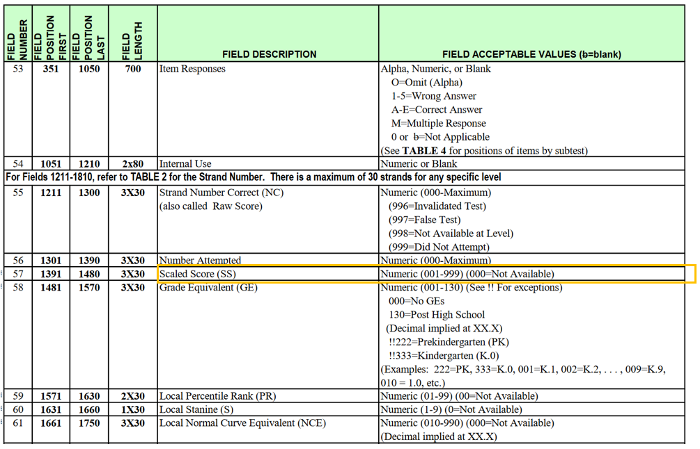
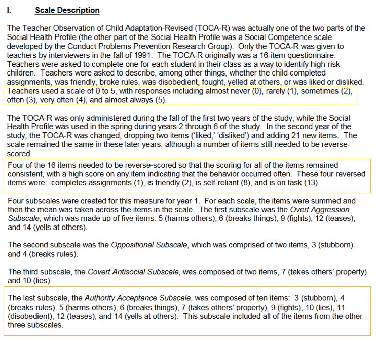
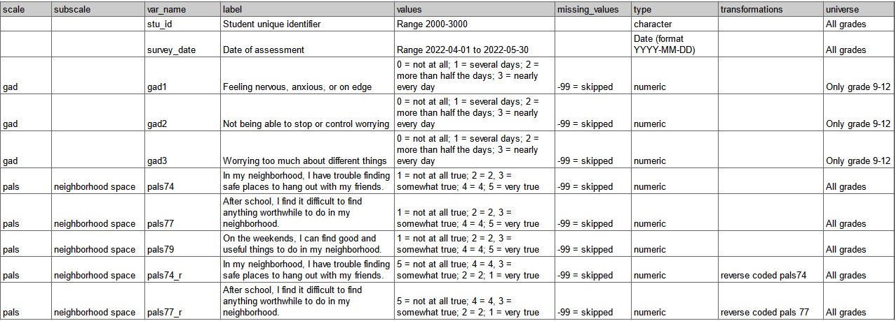
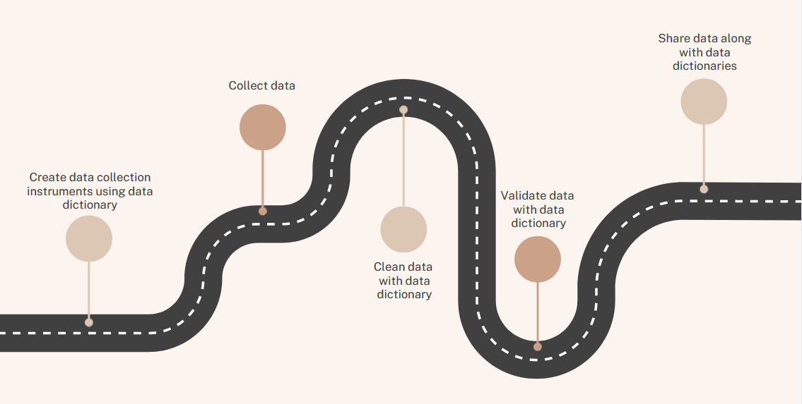
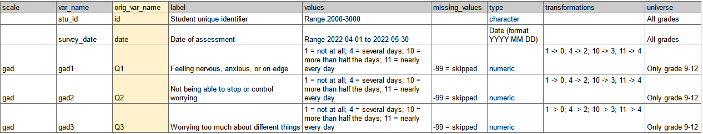

Using a data dictionary as your roadmap to quality data
By Crystal Lewis in tutorials
October 26, 2022
A data dictionary, a rectangular format collection of names, definitions, and attributes about variables in a dataset, is arguably the single most important piece of documentation you will create in your research study. While a data dictionary, sometimes also called a codebook or variable information log, is often used as a tool to help you and others interpret your data at the end of your project, it is actually even more powerful if created before you ever collect a single piece of data, serving as a roadmap as you design your data collection tools and clean your data, in order to ultimately get to where you want to go.
Creating a data dictionary before you collect data
Imagine you have the luxury of starting here – creating a data dictionary before you ever collect a single piece of data. You know what measures you want to collect and what items make up that measure. But how will you name those variables? What types should your variables be? What are allowable values of those items? What transformations are needed for those variables? These are all questions you should start asking before you ever collect data. And your answers should be documented in a data dictionary.
So what documents do you need to collect in order to start creating your data dictionary?
- Your Style Guide: If you are new to style guides, it is a set of standards for how your team should organize data for your project. Style guide rules can apply to many aspects of your project, but for the sake of a data dictionary, I am particularly focusing on rules for naming variables and coding response values. If you want to read more about creating a style guide for your project and learn best practices for variable naming and value coding, you can review this resource.
- The other piece of information you will need are the actual measures you plan to collect. This may look like technical documents from an assessment company, or instruments attached to publications. Whatever format you are gathering your measures from, you will want your documents to provide information such as:
- What items make up the measures/scales? What is the exact wording of items?
- How are items coded?
- Are there any calculations/reverse coding needed?
Examples of documents you might collect:
| Pearson SAT10 Codebook | TOCA-R Kindergarten/Year 1 Fast Track Project Technical Report |
|---|---|
|  |  |
Once your documents are collected, you can start to construct your data dictionary.
Building a data dictionary
A data dictionary is typically created in a rectangular format. What tool you use to build your data dictionary is up to you. But there are key pieces of information that should be included, as well as additional optional fields that can be helpful as well.
| Fields to include | Optional helpful fields to include |
|---|---|
| Variable name | Skip patterns |
| Variable label (What is this item?) | Required item (Were participants allowed to skip this item?) |
| Variable type | Variable universe (Who got this item?) |
| Allowable values/range | Notes (such as versions/changes to this variable) |
| Assigned missing values | Associated scale/subscale |
| Recoding/calculations | Time periods this items is available (if study is longitudinal) |
You will build one data dictionary for each instrument you plan to collect (ex: student survey data dictionary, teacher survey data dictionary, student assessment data dictionary). These can be separate files, or separate tabs in the same spreadsheet. Again, it’s up to you. Just think of each data dictionary as a plan for what variables will exist in the final dataset for that instrument.
As you build your data dictionary, consider the following:
- Are your variable names meeting the requirements laid out in your style guide?
- If your items come from an existing scale, does your value coding align with the coding laid out in the documentation? If your items do not come from an existing scale, does your value coding align with the requirements in your style guide?
- What additional items will make up your final dataset (it could be items that you plan to add to the data after it is collected, i.e. treatment, unique identifiers, calculated variables)?
Example data dictionary for a student survey

The last step before you are ready to release your data dictionary into the world, is to do a review with your team. Is everyone in agreement about how variables are named, how values are coded, and our variable types? Are we all in agreement about who gets each item? Do we want to adjust any of the question/item wording? Does our data dictionary include everything we plan to collect? Are we missing any items?
Using your data dictionary
Once your data dictionaries are finalized, you can start to:
-
Build your data collection instruments and data entry forms based on your data dictionary. If you are building any of your own tools (forms, surveys, assessments), you can use your data dictionary as a guide to do the following:
- Add items to your instrument
- Name your items in your tool
- Correctly code items in your tool
- Add validation to your items (acceptable variable type, allowable ranges, etc.)
-
And then once you capture data, you can once again use your data dictionary as a guide to help you further clean your data, using your data dictionary in the cleaning process (knowing what calculations to do, adding embedded labels, etc.)
-
You can also use your data dictionary in your data verification process (ex: confirming variable types, acceptable ranges, etc.).
-
And then last – your data dictionary serves as metadata that allows others to interpret your data when you share your data.
Be on the lookout for future blog posts for more details on using your data dictionary for each of these purposes above!

Creating a data dictionary after data is collected
Everything we have covered above requires a lot of planning, upfront knowledge, and control over your data collection efforts. While this is of course the ideal situation, we all know this is not always how projects go. You might be reading this after you have already collected data without using a data dictionary, or you may receive data from someone else who did not use a data dictionary as their guide. Totally okay, you can still build a data dictionary! You will just be working backwards now, using detective work to answer questions such as, what DO these variables represent, what SHOULD the values be, who DID receive the questions, what types SHOULD the variables be, what SHOULD the variables be named?
This detective work is not easy, it may require one or more means to collect information. Of course it’s best to start out here:
- Digging into the data to see what currently exists and begin to build your data dictionary here.
- But it turns out all this usually tells you is what DOES exist in the data, not what SHOULD actually exist in the data. Items could be incorrectly coded, columns could be assigned the incorrect variable type, etc.
- So as you dig into the data, start to collect questions
- What was the wording of this item?
- Who received this item?
- What was the expected range or categorical options of this item?
- Is the range I’m seeing the full range, or is it larger than this?
- Do I have values in my data that don’t make sense for this item?
- What type should this variable be?
Once you collect your questions, the detective work will continue. If possible:
- Contact the person who originally collected the data to learn more about the instrument and the data
- Contact the person who cleaned the data (if cleaned) to see what transformations they completed on the raw data
- Request access to the original instruments to see things like exact question wording, item response options, skip patterns, etc.
- Request any documentation they have. Do they have their own data dictionaries, codebooks, or syntax that might help you understand what is going on in the data?
Ultimately you will hopefully end up with a data dictionary structured very similar to the one above. You may add additional fields that help you keep track of further changes (like any variables you plan to rename), and your transformations section may become more verbose as the values assigned previously may not align with the values you prefer based on your style guide or the existing measures. Otherwise, the data dictionary should still be constructed in the same manner mentioned above.

Again, once this data dictionary is created, you can pick up at step 2 – using your data dictionary as a roadmap for further data cleaning.
Further Resources
If you would like to learn more about data dictionaries, here are some resources for further reading!